2025 年新闻动态（130 篇）
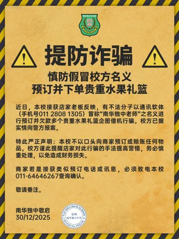
提防诈骗通告·慎防假冒校方名义预订并下单贵重水果礼篮 近日，本校接获店家老板反映，有不法分子以通讯软体（手机号011 2808 1325）冒称“南华独中老师”之名义进行预订并欠款多个贵重水果礼篮企图借机行骗。校方已据实情向警方报案。 特此严正声明：本校不以口头向商家预订阅读全文 →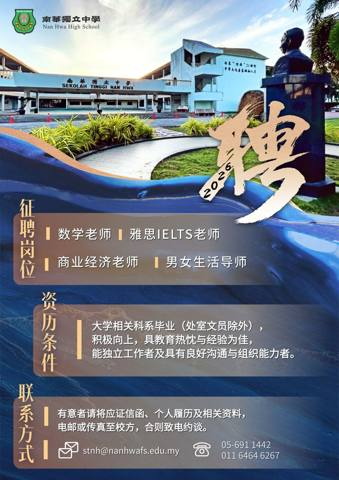
诚邀加入·南华独中团队·本校因2026年校务发展，高薪聘请对教育改革、人文素养、专业能力、 在职进修与个人提升充满热忱的你。 征聘岗位如下： 数学老师、商业经济老师、雅思IELTS老师；男女生活导师。 有意者请将应征信函、个人履历表及 相关资料电邮或传真至校方，合则致电约谈。 电话：05 - 691阅读全文 →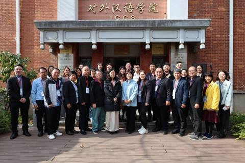
一场跨越中国南北取经之路全霹雳九所独中联手链接中方教育学府 探索AI赋能教育与开辟多元升学道路造福学子 从上海的学术高地到天津的理工强校，从“成功教育”的发源地到AI赋能的未来课堂，霹雳州九所华文独立中学组成的“上海成功教育参访团”，在为期12天的行程中，不仅完成阅读全文 →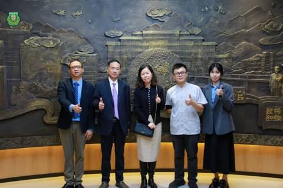
南华独中携手漳州科技学院共建“中华茶文化海外基地” 引进与推广中华茶道精神 （漳州26日讯）让中华文化跃然书页，成为学生可触摸、可品味的实景教育，本校日前远赴中国福建漳州，与以茶专业闻名的 #漳州科技学院 正式签署合作备忘录，宣布将在本校校园内共建 “ #中华茶文阅读全文 →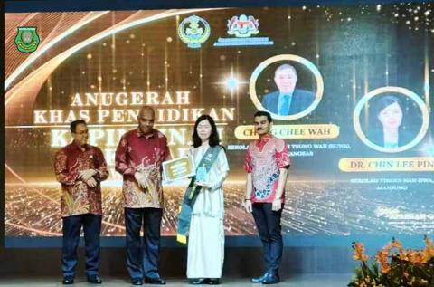
走在方向明确的教改路上·霹雳州私立学校领导力特别奖揭晓南华独中校长陳麗冰博士荣膺冠军 本校 校长陳麗冰博士 受邀出席由 霹雳州教育局 主办的“#2025年霹雳州教育表扬大会”（Majlis Apresiasi Peringkat Negeri Perak）并凭借卓越的学校管理与领导表现，荣获“阅读全文 →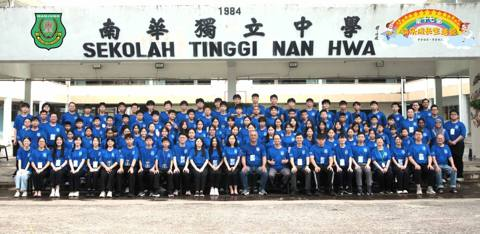
南华独中第17届小六快乐成长生活营聚集县内外12所华小生在欢笑中立志 本校于12月12日至14日成功举办 “#第17届小六快乐成长生活营”。本届营会吸引了来自曼绒县内外共12所华小小六毕业生参与，最远的一位营员来自新加坡。经过三天两夜的洗礼后，营员目光中多了一份坚定，语气中阅读全文 →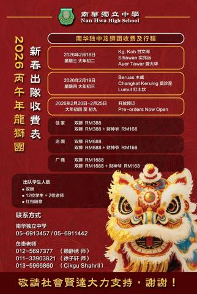
南华独中龙狮团贺新岁·南风送暖催骏马华教生辉跃锦程 曼绒南华独中龙狮团在来临的农历新春佳节期间出队贺岁 2026年2月18日 星期三大年初二：Kg. Koh甘文阁；Sitiawan实兆远；Ayer Tawar爱大华 2026年2月19日 星期四大年初三：Beruas 木威；C阅读全文 → 教育路上，伙伴相随感谢 #育伯乐 到访与记录 让孩子的光绽放得更遥远，也更耀眼。 —————— 《教育推动 × 南华社区责任行动计划》 育伯乐， 以未来教育媒体中心， 走进曼绒县南华独中， 记录一场真实发生的教育行动。 学生把在社团里学到的能力， 带进社区、阅读全文 →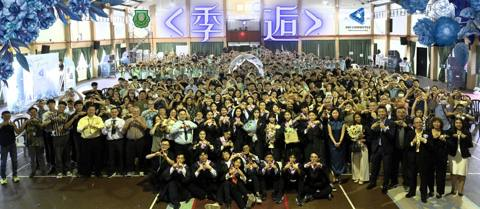
南华独中毕业礼化身“登机口”高中第51届暨初中第54届毕业典礼 以“#季逅”为题，象征告别与启程 不仅高三生家长，董事教师学生人人手持一张通往未来的“机票”即是手册，名为“青春”的候机大厅都是前来见证南华独中“#2025年高中第51届初中第54届毕业典礼”受邀嘉宾。本阅读全文 →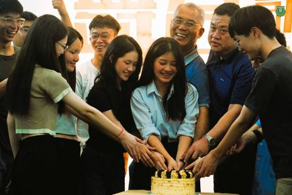
南华独中宿舍高三欢送会·百人合唱献学长姐祝福宿舍自治委员会交接仪式象征传承 “朋友一生一起走，那些日子不再有……” 当熟悉的旋律在本校多用途学生餐厅响起，全场百余名寄宿生层层围住为即将离巢的12位高三学长姐，以歌声献上最后的祝福。此刻歌声超越了语言，谱写成一篇关于青春的乐曲。 本校宿阅读全文 →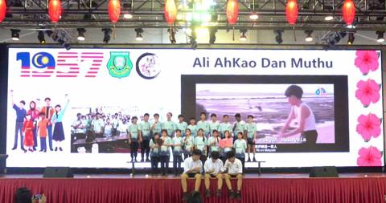
南华独中第12届班级歌唱比赛当熟悉的《浪花一朵朵》与《童话》旋律在礼堂响起，这不仅是音符的流转，更是南华学子对马来西亚原创音乐的致敬。 本校日前举办 “第12届 班级歌唱比赛”，本届赛事别出心裁，以 “支持马来西亚创作” 为主题。从阿牛的庶民摇滚、光良的深情叙事，到关阅读全文 →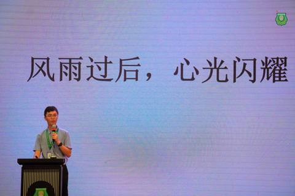
风雨后的第一堂课：南华独中办防灾与心理修缮讲座当罕见的热带风暴“森纳尔”（Senyar）过境，留下的不仅是倒塌的树木与满地泥泞，更是对温室花朵们的一次震撼教育。 校长陳麗冰博士： 本校虽在本次风灾中受到一定程度波及，但校方并未止步于硬件修缮，而是第一时间关注学生。为此，校方日前紧急召开阅读全文 →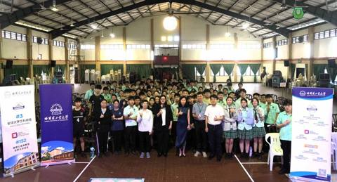
南华独中牵手中国航天第一校校长与陈晓葶主任签备忘录 筑梦世界级工程师摇篮 当南华独中人文底蕴，遇上中国“#航天第一校”硬核科技，关于未来与梦想的对话随着一纸合约的签署而正式展开。 中国顶尖学府—— #哈尔滨工业大学（HIT） 马来西亚海外教育中心代表团日前造访曼绒南阅读全文 →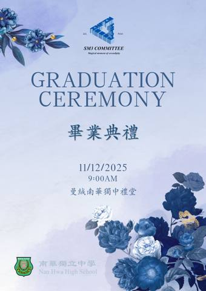
尊敬的高三毕业生家长您好：敬邀出席2025年高三毕业典礼在最美的季节，我们将迎来孩子们人生中的重要里程碑——高三毕业典礼。三年的青春与奔跑、坚持与蜕变，都将在这一刻凝成一束温暖的光，照亮他们迈向未来的道路。 南华独中诚挚邀请您与我们一同见证孩子的成长与荣耀。 一、活动日期：2025年12月11日阅读全文 →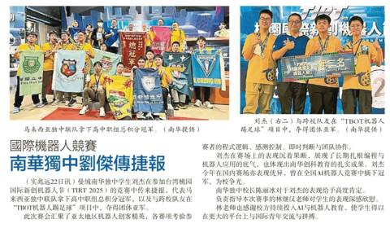
国际机器人竞赛·南华独中刘杰传捷报——《星洲日报》23/11/2025阅读全文 →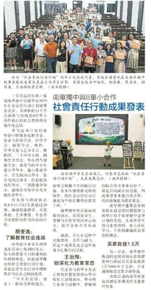
南华独中与8华小合作·社会责任行动成果发表——《星洲日报》23/11/2025阅读全文 →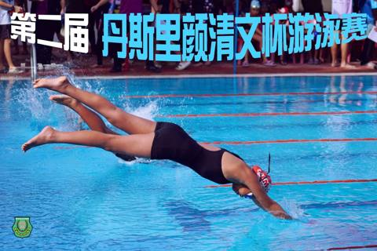
南华独中办丹斯里颜清文杯游泳赛16校健儿碧波竞逐 爱大华民德华小德陈施源同学 连破两记录夺最佳运动员 本校日前盛大举办 “2025年第二届 #丹斯里颜清文杯 游泳比赛”。本届赛事规模宏大，共汇聚了曼绒县内 16所 各源流学校的游泳健将共襄盛举。从华小、国小、淡小到私立学阅读全文 →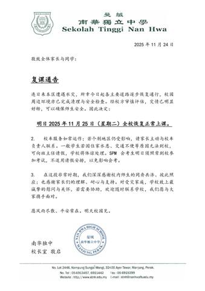
2025 年 11 月校园动态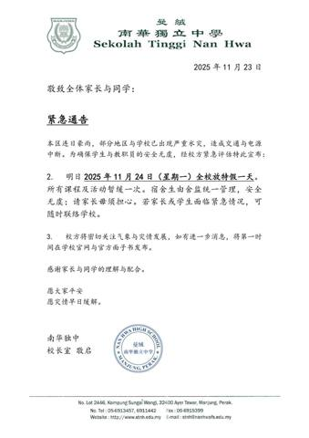
2025 年 11 月校园动态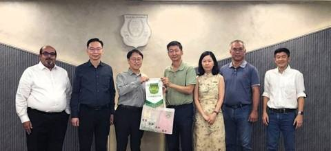
亚太科技大学莅临拜访南华独中探讨教育合作项目 携手探索未来教育新篇 亚太科技大学（APU）校方代表一行莅临南华独立中学，双方就“教育合作项目”展开高层会谈，旨在连接高中技职教育与大学专业培养、强化教师发展与科技教育链结，为本地华文独中学生铺设通向未来人才市场的多元通道阅读全文 →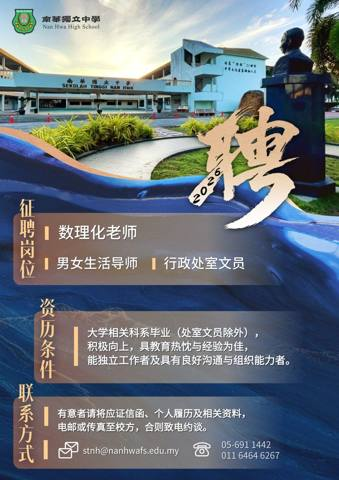
#诚邀加入·#南华独中团队本校因2026年校务发展，高薪聘请对 教育改革、人文素养、专业能力、 在职进修与个人提升充满热忱的你。 征聘岗位如下： 数理化老师；男女生活导师及行政处室文员。 有意者请将应征信函、个人履历表及 相关资料电邮或传真至校方，合则致电约谈。 电阅读全文 →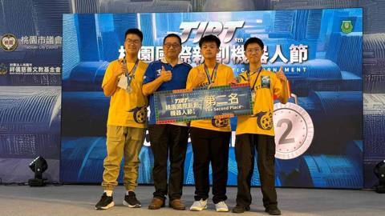
南华独中学生刘杰勇闯国际赛场TIRT 桃园国际新创机器人节再创佳绩 本校在国际机器人舞台再传捷报。高一忠 #刘杰 同学出征 台湾桃园国际新创机器人节（TIRT 2025），在多项 AI 与机器人项目中展现出稳健而成熟的技术实力。在“#TBOT机器人踢足球”项目中，他与阅读全文 →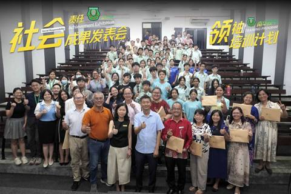
南华独中 11学会团体·走进8所华小履行社会服务成果发表会温馨交流 （曼绒15日讯） 南华独中于本月举办“2025年社会责任行动计划成果发表会”，为本校十一项学会团体在八所曼绒县华小执行的社会责任项目作年度总结。本次发表会是该计划的验收阶段，合作学校校长、副校长及育伯乐讲堂代表皆出席参与阅读全文 →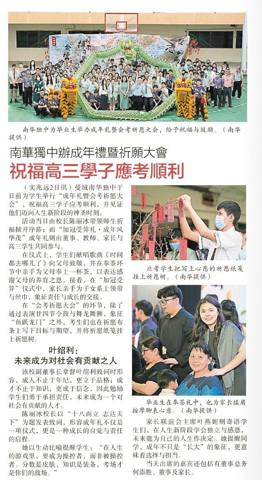
南华独中办成年礼暨祈愿大会祝福高三学子应考顺利——《星洲日报》3-11-2025阅读全文 →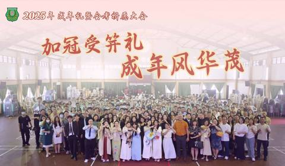
2025年成年礼暨会考祈愿大会十月清晨，微风和煦，南华独中于近日隆重举行“2025年 #南华独中 #成年礼暨会考祈愿大会”，以庄严与温情并举的仪式，为高三学子祈愿应考顺利，并见证他们迈向人生新阶段的神圣时刻。 活动当日由校长陳麗冰博士带领师生祈福掀开序幕；而“加冠受笄礼阅读全文 →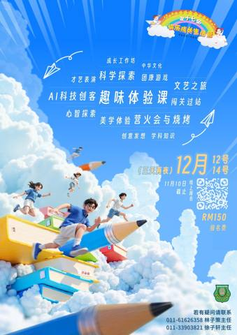
第十七届 小六快乐成长生活营由即日起，开放线上报名！ 从快乐中提炼成长的元素， 在成长上谁不想快乐随行。 让孩子踏上启航辉煌征途， 携手创造宏图梦想与前景！ ◎ 营会日期：12月12日至12月14日（星期五至星期日） ◎ 营会地点：曼绒南华独中 ◎ 营会收费：RM15阅读全文 →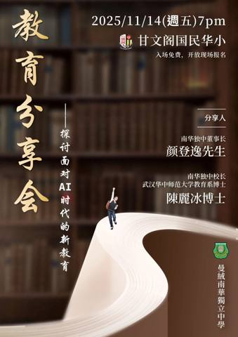
以不变的教育初心·应对瞬息万变的时代为了让社会各界更了解教育改革与当代教育的趋势，本校将举办一场主题为“面对AI时代的新教育”的教育分享会。 日期：14/11/2025(星期五) 时间：7.00pm 地点：甘文阁国民华小 主讲人：南华独中董事长颜登逸先生、南华独中校长陳麗冰博阅读全文 → Light up the world with kindness屠妖节，是光明战胜黑暗的象征， 更是让我们彼此祝福、共享温暖的时刻！ 由我校印裔老师领衔，带领师生职员们共同献上最真挚的屠妖节祝福影片！愿每一道微笑，都成为黑暗中的光 佳节快乐，心中喜悦阅读全文 →
Light up the world with kindness屠妖节，是光明战胜黑暗的象征， 更是让我们彼此祝福、共享温暖的时刻！ 由我校印裔老师领衔，带领师生职员们共同献上最真挚的屠妖节祝福影片！愿每一道微笑，都成为黑暗中的光 佳节快乐，心中喜悦阅读全文 →
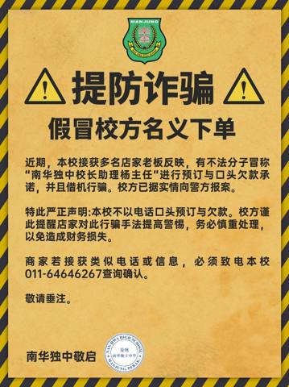
提防诈骗·假冒校方名义下单近期，本校接获多名店家老板反映，有不法分子冒称“南华独中校长助理杨主任”进行预订与口头欠款承诺，并且借机行骗。校方已据实情向警方报案。 特此严正声明:本校不以电话口头预订与欠款。校方谨此提醒店家对此行骗手法提高警惕，务必慎重处理，以免造成财阅读全文 → 中秋安圆 心明致远
中秋安圆 心明致远
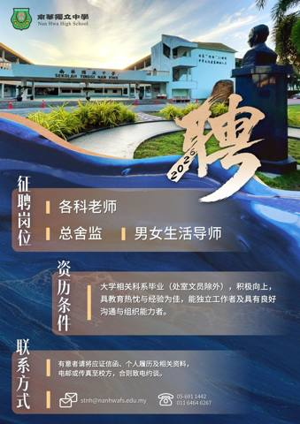
诚邀加入南华独中团队·本校因2026年校务发展，高薪聘请对教育改革、人文素养、专业能力、 在职进修与个人提升充满热忱的你。 征聘岗位如下： 各科老师；总舍监以及男女生活导师。 有意者请将应征信函、个人履历表及 相关资料电邮或传真至校方，合则致电约谈。 电话：05 - 691 1442，011 - 阅读全文 → 南华独中 2025年·文艺大汇演 精彩回顾之十二舞蹈团《烈士暮年》 烈士暮年，壮心不已。 盈缩之期，不但在天； 养怡之福，可得永年。 幸甚至哉，歌以咏志。 《烈士暮年》取意自曹操《龟虽寿》。舞蹈以诗句为骨，以肢体为韵，展现烈士虽年岁已高，却仍怀壮志、心怀山河的精神。舞者们用坚定的步伐与昂阅读全文 →
南华独中 2025年·文艺大汇演 精彩回顾之十二舞蹈团《烈士暮年》 烈士暮年，壮心不已。 盈缩之期，不但在天； 养怡之福，可得永年。 幸甚至哉，歌以咏志。 《烈士暮年》取意自曹操《龟虽寿》。舞蹈以诗句为骨，以肢体为韵，展现烈士虽年岁已高，却仍怀壮志、心怀山河的精神。舞者们用坚定的步伐与昂阅读全文 →
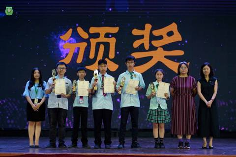
南华独中师生勇夺王弄书文学奖校长勉励师生续写文学风华 在第七届“#王弄书文学奖”华文散文创作比赛中，曼绒南华独中再传捷报，共有四名学生及一名教师凭借真挚动人的作品脱颖而出，斩获佳绩，展现南华师生在文学创作上的写作实力与人文底蕴。 在中学生组方面，高一忠 #陈柯权 以《阅读全文 →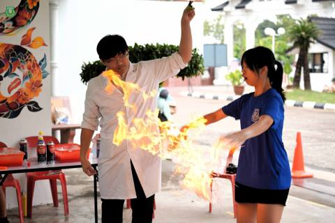
南华独中校园开放日·科学与科技、摄影与美学展成果丰硕引领教育新篇章 霹雳曼绒南华独立中学于近日举办“#2025年校园开放暨科学与科技展”，同时配合“#美术与摄影展”，吸引了区内小学生、家长及公众踊跃出席。 本次活动除了展示学生在科学、科技、美术及摄影等领域的学习成果外，也设有多元化的 #校本阅读全文 →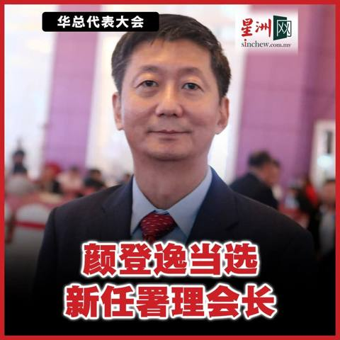
南华独中·热烈祝贺·本校董事长颜登逸先生荣膺 华总署理总会长！ 德望兼备，实至名归 愿再创华社新辉煌。 新闻链接：https://www.sinchew.com.my/news/20250928/nation/6901820阅读全文 →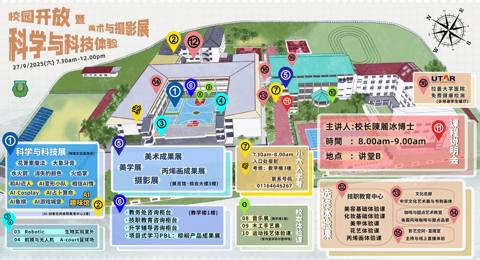
就在明天·2025南华独中校园开放导览图日期：2025年9月27日（星期六） 时间：早上7.30am ~ 中午12pm 地点：南华独中阅读全文 → 恭喜本校数学组主任暨AI教学与应用处柯家浚老师的科普作品在【企鹅科普视频大赛】中…恭喜本校数学组主任暨AI教学与应用处柯家浚老师的科普作品在【企鹅科普视频大赛】中荣获【AIGC最佳作品】！Updated Sep 20, 2025 10:58:03 pm阅读全文 →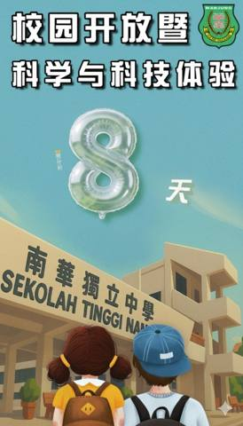
南华独中校园开放 暨 科学与科技体验!!! 倒数8天 !!! 仅仅再等一周就能体验校园风采 入场免费@老少咸宜 日期：2025年9月27日（星期六） 时间：早上7.30am ~ 中午12pm 地点：南华独中 欢迎大家一同参与这场汇聚艺术、技职、科学与科技的校园盛典！让我们在互阅读全文 → 南华独中 2025年·文艺大汇演 精彩回顾之十一24节令鼓《鼓动南洋：猪仔船的回响》 鼓起如潮，是浪迹天涯的呐喊； 节奏如心，是不屈不挠的搏击。 我们以鼓声回望那一段刻骨铭心的历史—— “猪仔船”上的血泪与希望。 清末民初，无数肩负家庭重担的先辈们，踏上了通往南洋的苦旅。他们在逼仄、恶劣阅读全文 →
南华独中 2025年·文艺大汇演 精彩回顾之十一24节令鼓《鼓动南洋：猪仔船的回响》 鼓起如潮，是浪迹天涯的呐喊； 节奏如心，是不屈不挠的搏击。 我们以鼓声回望那一段刻骨铭心的历史—— “猪仔船”上的血泪与希望。 清末民初，无数肩负家庭重担的先辈们，踏上了通往南洋的苦旅。他们在逼仄、恶劣阅读全文 →
 南华独中 2025年·文艺大汇演 精彩回顾之十龙狮团《狮魂·救赎之战》 在广袤神秘的原始森林中，两头雄狮——兄 弟“阿塔”与“卡鲁”统领着狮群，共同守护着这片宁静的土地。 然而，一头由怨念凝聚而成的妖兽突袭了森林。面对灾难，孤身一人的阿塔，能否勇闯黑暗，踏上未知的救赎之路？在焚林与幽谷阅读全文 →
南华独中 2025年·文艺大汇演 精彩回顾之十龙狮团《狮魂·救赎之战》 在广袤神秘的原始森林中，两头雄狮——兄 弟“阿塔”与“卡鲁”统领着狮群，共同守护着这片宁静的土地。 然而，一头由怨念凝聚而成的妖兽突袭了森林。面对灾难，孤身一人的阿塔，能否勇闯黑暗，踏上未知的救赎之路？在焚林与幽谷阅读全文 →
 南华独中 2025年·文艺大汇演 精彩回顾之九特邀嘉宾SMK Seri Manjung《Tarian Pencak Dabus》 Pencak Dabus 舞蹈是一项融合了武术动作与诵念节奏的艺术遗产。每一个舞步都展现了勇气、耐力与精神力量，并以文化艺术的形式呈现其独特之美。伴随着充满阅读全文 →
南华独中 2025年·文艺大汇演 精彩回顾之九特邀嘉宾SMK Seri Manjung《Tarian Pencak Dabus》 Pencak Dabus 舞蹈是一项融合了武术动作与诵念节奏的艺术遗产。每一个舞步都展现了勇气、耐力与精神力量，并以文化艺术的形式呈现其独特之美。伴随着充满阅读全文 →
 南华独中 2025年·文艺大汇演 精彩回顾之八特邀嘉宾 SK Seri Manjung & SK Seri Selamat 《Tarian Rampaian Melayu Tari Si Dara Manis》 这是是一支融合传统韵味的马来舞蹈。舞姿轻柔婀娜，仿佛村庄里一位位少女在夕阳阅读全文 →
南华独中 2025年·文艺大汇演 精彩回顾之八特邀嘉宾 SK Seri Manjung & SK Seri Selamat 《Tarian Rampaian Melayu Tari Si Dara Manis》 这是是一支融合传统韵味的马来舞蹈。舞姿轻柔婀娜，仿佛村庄里一位位少女在夕阳阅读全文 →
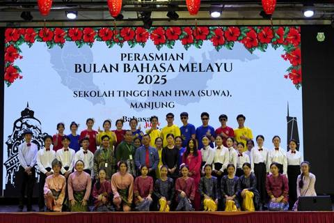
南华独中2025马来语月开幕以“Bahasa Jiwa Bangsa”为主题 推广马来语文化的礼赞 九月的晨风里，南华独中迎来一年一度的“#马来语月”（Bulan Bahasa Melayu 2025），以“Bahasa Jiwa Bangsa”（#语言是民族的灵魂）阅读全文 → 南华独中 2025年·文艺大汇演 精彩回顾之七特邀嘉宾 SK Seri Manjung《Bunga Seni Silat Kesuma》 马来武术（Seni Silat）是一项民族的文化遗产，不仅具有自卫功能，更象征着马来民族的勇气、纪律与尊严。SK Seri Manjung所呈献的对阅读全文 →
南华独中 2025年·文艺大汇演 精彩回顾之七特邀嘉宾 SK Seri Manjung《Bunga Seni Silat Kesuma》 马来武术（Seni Silat）是一项民族的文化遗产，不仅具有自卫功能，更象征着马来民族的勇气、纪律与尊严。SK Seri Manjung所呈献的对阅读全文 →
 南华独中 2025年·文艺大汇演 精彩回顾之六特邀嘉宾 红土坎本律平民华小 24节令鼓 《Sekolahku, Hatiku》 这是红土坎本律平民华小的24节令鼓孩子们对校园最深情的告白。那是他们每天走进的地方，那是陪伴他们成长的舞台。鼓声，将记录他们最纯真的岁月。有一个地方，他们每天阅读全文 →
南华独中 2025年·文艺大汇演 精彩回顾之六特邀嘉宾 红土坎本律平民华小 24节令鼓 《Sekolahku, Hatiku》 这是红土坎本律平民华小的24节令鼓孩子们对校园最深情的告白。那是他们每天走进的地方，那是陪伴他们成长的舞台。鼓声，将记录他们最纯真的岁月。有一个地方，他们每天阅读全文 →
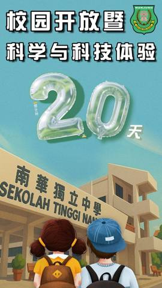
!!! 倒数20天南华独中校园开放 暨 科学与科技体验 日期：2025年9月27日（星期六） 时间：早上7.30am ~ 中午12pm 地点：南华独中 欢迎大家一同参与这场汇聚艺术、技职、科学与科技的校园盛典！让我们在互动体验中，携手点亮知识的星空，为未来播阅读全文 → 南华独中 2025年·文艺大汇演 精彩回顾之五特邀嘉宾 SMK Ambrose 舞蹈团《Kolattam 》 SMK Ambrose 为大家呈现的是印度南部传统民间舞蹈，主要流行于 泰米尔纳德邦（Tamil Nadu） 和 喀拉拉邦（Kerala）。据传，这种舞蹈最早起源于印度的 安得阅读全文 →
南华独中 2025年·文艺大汇演 精彩回顾之五特邀嘉宾 SMK Ambrose 舞蹈团《Kolattam 》 SMK Ambrose 为大家呈现的是印度南部传统民间舞蹈，主要流行于 泰米尔纳德邦（Tamil Nadu） 和 喀拉拉邦（Kerala）。据传，这种舞蹈最早起源于印度的 安得阅读全文 →
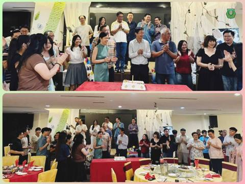
南华独中2025年教师节晚宴师爱如歌，绕梁不绝 南华独中于日前为教师们举办了一场庄重不失温馨的教师节晚宴。本届以“#师爱如歌”为题，今夜，老师们是最美的旋律，他们的心血与深情，谱写成一首首无声却动人的乐章。 董事长颜登逸先生在致辞中，满怀欣喜地说，这是他十四年来最开心阅读全文 → 南华独中 2025年·文艺大汇演 精彩回顾之四管乐团《Blue Ridge Saga 》 指挥 林美静同学 管乐团第三首选曲是《Blue Ridge Saga》一首极具画面感与情感深度的作品。它由美 国作曲家 James Swearingen 所创作，灵感源自美国东部的蓝岭山脉。乐曲宛阅读全文 →
南华独中 2025年·文艺大汇演 精彩回顾之四管乐团《Blue Ridge Saga 》 指挥 林美静同学 管乐团第三首选曲是《Blue Ridge Saga》一首极具画面感与情感深度的作品。它由美 国作曲家 James Swearingen 所创作，灵感源自美国东部的蓝岭山脉。乐曲宛阅读全文 →
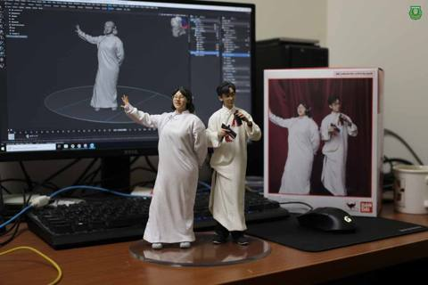
南华独中AI应用课学生抢先体验Google新模型 nano-banana Google 近日刚发布全新的 nano-banana 模型，以图像创作和角色一致性为亮点。南华独中高中“AI应用课”随即带进课堂，让学生们边学边玩，直接感受“全球最热潮流”。 指导老阅读全文 → 南华独中 2025年·文艺大汇演 精彩回顾之三管乐团《新不了情》 指挥 林美静同学 演唱 章浤乐同学 管乐团所演绎的《新不了情》 是一首描写感情结束后依然放不下的抒情作品。整首歌曲旋律缓慢、情绪克制，却将内心深处的思念与不舍层层展开。它所表达的不是轰轰烈烈的爱恋，而是在关系结束之 后，阅读全文 →
南华独中 2025年·文艺大汇演 精彩回顾之三管乐团《新不了情》 指挥 林美静同学 演唱 章浤乐同学 管乐团所演绎的《新不了情》 是一首描写感情结束后依然放不下的抒情作品。整首歌曲旋律缓慢、情绪克制，却将内心深处的思念与不舍层层展开。它所表达的不是轰轰烈烈的爱恋，而是在关系结束之 后，阅读全文 →
 南华独中 2025年·文艺大汇演 精彩回顾之二管乐团《You Raise Me Up》 指挥 林美静同学 管乐团借由《You Raise Me Up 》这首旋律温暖、情感真挚的作品，传达出面对困境与挣扎时不忘昂首阔步，奋勇挺进与跨过重重困难。这首曲子的主题 围绕 “鼓励” 与 “支撑”阅读全文 →
南华独中 2025年·文艺大汇演 精彩回顾之二管乐团《You Raise Me Up》 指挥 林美静同学 管乐团借由《You Raise Me Up 》这首旋律温暖、情感真挚的作品，传达出面对困境与挣扎时不忘昂首阔步，奋勇挺进与跨过重重困难。这首曲子的主题 围绕 “鼓励” 与 “支撑”阅读全文 →
 南华独中 2025年·文艺大汇演 精彩回顾之一舞蹈团《莲境雀灵》 舞者化身为雀鸟穿越天际，悄然降临于莲池之上，池水如镜，倒映出它轻盈的身影。它凝视水中自己，仿佛与莲一同静默守护，在涤荡凡尘喧嚣中渐渐归于纯净。池水与羽翼相互交融，雀灵不再只是过客，而是成为莲池的一部分。在莲心深处，它舒展阅读全文 →
南华独中 2025年·文艺大汇演 精彩回顾之一舞蹈团《莲境雀灵》 舞者化身为雀鸟穿越天际，悄然降临于莲池之上，池水如镜，倒映出它轻盈的身影。它凝视水中自己，仿佛与莲一同静默守护，在涤荡凡尘喧嚣中渐渐归于纯净。池水与羽翼相互交融，雀灵不再只是过客，而是成为莲池的一部分。在莲心深处，它舒展阅读全文 →
 南华独中 2025年·文艺大汇演谢幕《Tanggal 31》谨以此精彩回顾影片恭贺 马来西亚第68年国庆日快乐！阅读全文 →
南华独中2025年文艺大汇演《星洲日报》新闻报导Updated Aug 31,…南华独中2025年文艺大汇演《星洲日报》新闻报导Updated Aug 31, 2025 6:59:45 pm阅读全文 →
南华独中2025年文艺大汇演“#艺汇南华 · #共鸣大地” 赴约一场艺术与教育的盛宴 文化，是民族的灵魂；艺术，是心灵的殿堂更是归宿。2025年8月30日晚，南华独立中学大礼堂灯火辉映，一场以《艺汇南华·共鸣大地》为主题的文艺大汇演， 集结多元族群艺术形式，汇聚青春创阅读全文 →
南华独中 2025年·文艺大汇演谢幕《Tanggal 31》谨以此精彩回顾影片恭贺 马来西亚第68年国庆日快乐！阅读全文 →
南华独中2025年文艺大汇演《星洲日报》新闻报导Updated Aug 31,…南华独中2025年文艺大汇演《星洲日报》新闻报导Updated Aug 31, 2025 6:59:45 pm阅读全文 →
南华独中2025年文艺大汇演“#艺汇南华 · #共鸣大地” 赴约一场艺术与教育的盛宴 文化，是民族的灵魂；艺术，是心灵的殿堂更是归宿。2025年8月30日晚，南华独立中学大礼堂灯火辉映，一场以《艺汇南华·共鸣大地》为主题的文艺大汇演， 集结多元族群艺术形式，汇聚青春创阅读全文 →
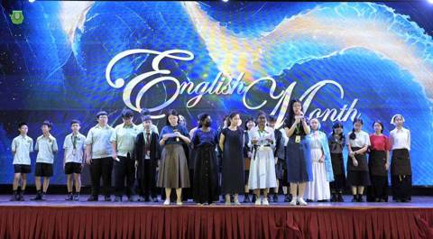
南华独中“#英语月”热烈展开打造英语友善校园氛围 激发学生学习热情 为营造积极向上的英语学习氛围，南华独中 #英文组 于八月份精心策划并推动了一系列别开生面的“英语月”活动。活动内容丰富多样，既寓教于乐，又成功激发了师生们主动接触英语的兴趣与热情。 活动在周会上正式拉阅读全文 →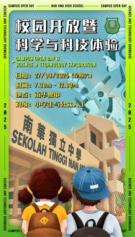
《南华独中校园开放 暨 科学与科技体验》南华独中一年一度的“校园开放暨科学与科技体验课”即将登场！欢迎小学生与公众人士齐聚校园，亲身体验校本与技职课程的魅力，探索科学与科技的奇妙世界，让学习成为一段充满乐趣与惊喜的旅程！畅享一场跨越知识、艺术与科技的教育盛宴！ 活动资讯 日期：2阅读全文 →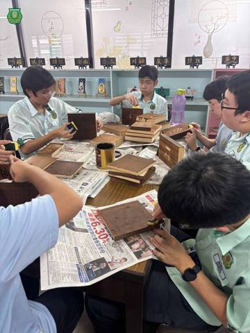
南华独中选修课·书画刻·#入木三分 @ #刻出精彩在南华独中选修课《书画刻》里，学生们的“作业”可不只是纸笔作画，而是从木刻到上色，把一块块木料变成有故事的艺术品。 这堂课的主题是“书刻”。在何欣霓老师的指导下，从木刻到上色，同学逐步掌握书刻技巧，不仅学会了用笔刷、海绵处理上光油后的木面“阅读全文 →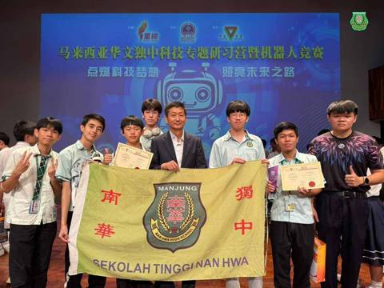
征战全国科技营机器人竞赛南华独中学生载誉而归 在 #2025年马来西亚全国华文独中科技专题研习营暨机器人竞赛 中，南华独中代表队在20所独中128位师生中以优异表现脱颖而出，勇夺佳绩。其中，#林隽晧同学 与联队伙伴在足球机器人项目中荣获亚军，并成功获得前往台湾参加阅读全文 →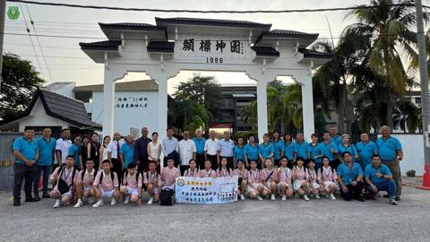
中国古田县玉田中学师生莅校南华独中喜迎姐妹情 2025年8月1日，一场跨越国界的教育交流在南华独中激荡起千层火花。南华独中迎来了来自中国福建省古田县玉田中学的小暑队师生代表团以及古田会馆一众代表，展开一整天紧凑而充实的文化、学术与生活课程体验交流，在“血脉相连”的姐阅读全文 →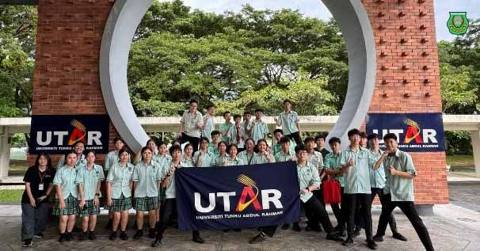
南华独中师生走进UTAR校园探索STEM教育魅力 为了加强学生对科学与工程领域的认识，并及早启发对未来升学方向的思考，本校师生一行近日前往马来西亚拉曼大学（UTAR）甘榜峇鲁校区，参与由UTAR孔子学院主办、推广与公共关系部（DPP）协办的“STEM探索与大学体验之旅阅读全文 →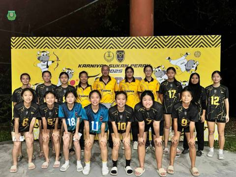
南华独中健儿扬威霹雳运动嘉年华赛场代表曼绒县女排女篮双双夺冠 由霹雳州体育理事会（Majlis Sukan Negeri Perak, MSN）主办的2025年霹雳州体育嘉年华（Karnival Sukan Perak, SUPER 2025）日前圆满落幕，南华独中学生代表阅读全文 →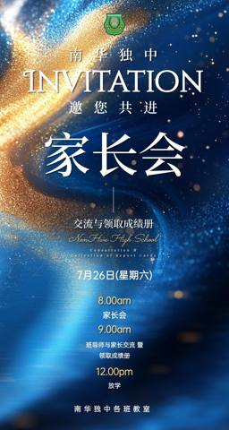
南华独中家长会·邀请父母走进教室，孩子却走进他们的心进行一场真实的教育对话 7月26日清晨，南华独中的校园如常迎来一日的晨曦，只是，这一次踏入教室的，不只是学生，还有他们的父母。南华独中2025年家长会，在形式与精神上迎来一次意义深远的革新：家长们不再整齐划一地坐在礼堂里聆听演出与宣读，而是阅读全文 →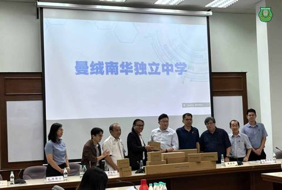
南华独中获赠理科实验数字化器材在董总华文独中工委会的主导下，筹获24.7万令吉购买35套理科实验数字化器材，并将其中30套分发给全马29所华文独中。曼绒南华独立中学荣幸成为受惠学校之一，科学主任刘瑞龙老师亲自出席仪式代表学校代领仪器，为校理科教学增添新动力。 此次受赠的阅读全文 →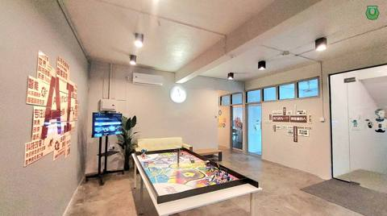
南华独中打造AI创客空间：在温度与科技交汇处，培育未来掌舵人AI技术迅猛发展的时代背景下，南华独中顺势而为，于2025年初正式启用“AI创客空间”，并正式将《AI教学与应用》纳入高一课程，为学生打造一个融合科技、创意与教育温度的全新学习场域。这里不仅是技术启蒙的摇篮，更是梦想起航的发射台，不让年轻学阅读全文 →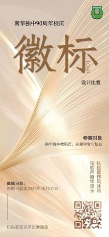
玖拾载栉风沐雨，弦歌声赓续流长南华独中即将在明年迎来90周年校庆！ 我们诚邀你—— 不论是教职员、在校生， 还是热血校友—— 一起来动笔、动脑、动创意！ 你觉得，90岁的南华， 值得拥有哪一款徽标（LOGO）？ 典雅？活泼？象征传承？融合时代？ 我们等的，就是你的设计灵阅读全文 →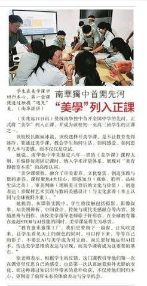
南华独中首开先河·“美学”列入正课——《星洲日报》11-07-2025阅读全文 →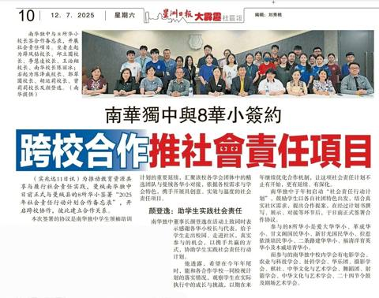
南华独中与8华小签约·跨校合作推社会责任项目——《星洲日报》12-7-2025 电子报链接：https://www.sinchew.com.my/?p=6684003阅读全文 → 全马中学首创·开展2025年社会责任行动计划南华独中与八所华小签署合作备忘录 为推动 #教育资源共享 与 #履行社会责任实践，南华独中于日前正式与八所曼绒县华小签署“2025年社会责任行动计划合作备忘录（MOU） ”，开启跨校协作，彼此建立合作关系。 本次签署仪式是南华独中学生领袖培阅读全文 → 兼顾人文与科技·南华独中继“AI应用课”开办全国首创美学正课 “美育不是装饰教育的花边，而是教育的灵魂。” 南华独中，以全国首创的美学正课，用一堂课回应未来，也点亮教育的初心，开启有温度的教育新页。这一举措被视为在人工智能高速发展的时代背景下，一项兼顾人文与科技、有温度的教育创举阅读全文 → 曼绒南华独立中学2025年文艺大汇演《艺汇南华・共鸣大地》 本校曼绒南华独立中学为筹措教学经费，改善学习资源，定于2025年8月30日（星期六）晚上7时至9时30分，隆重举办2025年文艺大汇演。本届盛会以“艺汇南华・共鸣大地”为主题，集结多元族群艺术形式，汇聚青春创意与文化阅读全文 → 科技无年龄限制·银发族乐学AI导师为霹雳州曼绒南华独中 AI教学与应用主任林子策老师 ——《星洲日报》30-6-2025阅读全文 → 中学生人工智能机器人竞赛南华独中夺冠及第四名 ——《星洲日报》20-6-2025阅读全文 → “寸草心21”双亲节征文赛南华独中师生夺多奖 ——《星洲日报》18-06-2025阅读全文 → 禾乐国际艺术节·南华独中管乐团夺2奖——《星洲日报》18-06-2025阅读全文 → 科技与文化之旅·南华独中苏州研学团走访高校深化建教合作 南华独中于2025年6月5日至9日，组织董事、校友会代表、教师与学生远赴中国苏州，展开一趟以“研学”为核心的交流访问。此行重点聚焦三所高等学府：#苏州科技大学、#苏州百年职业学院 以及 #西交利物浦大学，旨在探索未来建阅读全文 → 南华独中学生勇夺“王顺和杯”全国征文赛佳绩以文字思辨，书写青年之声，聚焦时代浪潮 在第十三届“王顺和杯”全国征文比赛中，南华独中三位初三忠班学生表现亮眼，脱颖而出，于中学组中分别夺得冠军与佳作荣誉，为校争光。 本届比赛主题为“新时代下的希望与挑战”，吸引全国各地中学生参与。南华独中阅读全文 → 南华独中称霸独大AI机器人赛——《星洲日报》18-6-2025阅读全文 → 全国AI机器人竞赛·南华独中勇夺冠军与殿军刘杰、周锐轩 #荣膺全国冠军 雷挺盛、张宇峰晋级四强勇夺殿军 在《2025年独大—马来西亚中学生人工智能机器人竞赛》中，南华独中代表队于全国108支队伍中脱颖而出，一举夺得冠军及殿军佳绩，为校争光，载誉而归 。 冠军：刘杰 与 周锐轩 刘杰阅读全文 → 传承孝道写真情·南华独中师生于《寸草心21》全国征文比赛获奖 在2025年度《寸草心21》双亲节全国征文比赛中，南华独中创佳绩，师生在多个组别中脱颖而出，斩获佳绩。 其中，特别篇组别由本校学生温佳俊荣获亚军，作品题为《茶》，细腻描绘祖孙亲情间的温热记忆；许晋弘同学以《欢喜就好》赢得季阅读全文 → 勇夺禾乐国际艺术节荣誉金奖南华独中管乐团 载誉而归 南华独中管乐团在2025马来西亚禾乐国际艺术节中表现卓越，凭借激昂磅礴的《Blue Ridge Saga》，荣获铜管／弦乐团大合奏赛中学B组“荣誉金奖” 佳绩，与此同时，林美静同学则摘下“最佳指挥奖 ”佳誉。 勇攀阅读全文 → 我们必须重新学会爱·——一位教育者与母亲在家庭悲剧后的沉思校长陳麗冰博士撰文 当血色浸染亲情纽带，当教育圣殿坍塌于至亲相残的巨响，社会惊愕的面具下藏着一个冰冷的真相：这不是个案，而是整个文明系统的病理切片。作为一名教育工作者同时人母，我必须以教育的刀锋与母亲的泪光，剖开这场悲剧背后的认知黑洞。这不阅读全文 → 南华独中 2025 文艺大汇演Pesta Seni Budaya Sekolah Tinggi Nan Hwa(SUWA) 以文会友 · 以艺通心 品壹场跨语言、跨民族、跨文化的文艺大汇演，灌溉心坎的艺术种子，萌发鉴赏的嫩芽，长出参天的文艺大树！欢迎您来欣赏这一场促进与阅读全文 → 学生领袖培训系列报导之三发掘天赋，点燃他人 何添胜董事谈“有温度的领袖” “领导不是发号施令，而是 #点燃团队的心。” 在2025年学生领袖培训计划的第三场讲座中，本校董事总务何添胜先生以《 #成为有温度的领袖》为题，展开一场动人心弦又思维深刻的分享。他以“热忱、阅读全文 → 南华独中推动“社会责任行动计划”从学会团体走进社区服务 学生以行动与真诚回应世界 “#社会责任行动计划”作为2025年学生领袖培训计划重中之重，来自南华独中18个学会团体的代表学生们不再只是聆听，而是亲自站上舞台，展现他们筹备已久的“社会责任行动计划”。这项汇聚教育热情与阅读全文 → 学生领袖培训系列报导之二品格与能力的对谈 未来领袖领略“才德兼备” 南华学生领袖训练营迎来关键一课，由本校校长陳麗冰博士主讲的“#才德兼备”讲座，以沉稳却犀利的语言，提出了学生领袖最根本也最艰难的命题： “德是否配位，决定灾殃是否随行！” 这不仅是一场讲座，更是一阅读全文 → 领袖素养：回馈社会与格局南华独中董事长颜登逸先生 唤醒学生领袖的时代使命 2025年南华独中学生领袖培训营于5月28日下午正式启动。首场讲座由董事长颜登逸先生亲自开讲，以《领袖素养：回馈社会与格局》为题，深刻阐发“21世纪领袖的责任观”，不仅奠定学生领袖培训计划整阅读全文 → AI时代美育何去何从·南华独中办讲座激发学生思考一场主题为《#美术在AI时代扮演的角色》的专题讲座于日前成功举行，苏丹依德理斯教育大学艺术、可持续性与创意产业学院讲师李辉业博士为主讲人，为师生深入剖析AI技术如何重塑艺术教育的内涵与未来发展方向。 李博士指出，随着AI训练(AI trai阅读全文 → 狂贺·恭喜南华独中排球选手詹茗琋与排球团队斩获女生排球全国获第二名阅读全文 → 美术在AI时代的角色·日期：5月28日（星期三）时间：9.00am 主讲人：李辉业博士 苏丹依德理斯教育大学艺术、可持续性与创意产业学院讲师阅读全文 → 南华独中篮球校队双双勇夺季军2025年全曼绒学联篮球赛成绩喜报 南华独中篮球校队在刚落幕的2025年全曼绒学联18岁以下篮球赛中，展现出色的团队精神与拼搏精神，男、女篮球校队双双荣获季军，为学校再添光彩。 此次比赛于5月6日至8日在南华国中体育馆举行，汇聚了全曼绒各校阅读全文 → 南华独中五学子荣获·“世界记忆遗产·侨批”文学大奖彰显中华文化素养与书写力 第四届“#世界记忆遗产· #侨批”主题文学创作大赛于近日揭晓成绩，“境外组”中曼绒南华独中五位学生脱颖而出，载誉而归，囊括一等奖、二等奖、三等奖与优秀奖，为校争光，也为马来西亚华文教育树立佳绩。 本届赛事由 中国福阅读全文 → 第二届谢师恩征文比赛·南华独中师生斩获佳绩恭喜本校 雷挺翔同学 荣获 初中组 第一名 林子策老师 荣获 公开组 佳作奖 “2025 年第二届谢师恩征文比赛”延续首届比赛宗旨，鼓励学生、毕业生、校友或大众以文字形式，表达对教师的感恩之情。通过撰写文章，不仅加深学生对教育工作者无私奉献阅读全文 → 诚邀加入南华独中团队·本校因2025年校务发展，高薪聘请对教育改革、人文素养、专业能力、 在职进修与个人提升充满热忱的你。 征聘岗位如下： 国文老师、英文老师； 总舍监、男女生活导师； 会计员。 有意者请将应征信函、个人履历表及 相关资料电邮或传真至校方，合则致电约谈。 电话：05 - 691 1阅读全文 → 2026年度初一新生招收正式开始1) 2025年度六年级在籍学生，本校将直接录取。 2) 凡未符合录取标准者亦可报名参与本校入学考试。 1)品行良好，操行A等或B等。 2) 活跃于课外活动、运动项目。 1) 全体新生皆需参与本校入学考试以公平衡量学生的学术水平。 2) 考阅读全文 → 与梦想 与热忱·与南华独中好好再一起导演李子剑带着他的首部执导的电影《好好再一起》，与演员古天发及其制作团队回到他的故乡曼绒实兆远，来到了南华独中，向学生们分享了他披星戴月、筚路蓝缕、一步一脚印地完成他的导演梦的过程。现场学生以热烈的掌声、满怀的敬佩与热情的发问，回应了李子剑阅读全文 → 南华独中送蛋糕予华小贺华小教师节教诲如春风，师恩似海深， 桃李满天下，春晖遍四方。 华小教师在栽培教育华人子弟的路上不遗余力，南华独中“咖啡与甜点艺术”学生亲手制作蛋糕，并由各华小校友暨南华独中在籍学生送达母校，亲手送上祝福。 感恩华小老师们，十年树木，百年树人。老师们，阅读全文 → 《走出猎巫式批判 正视制度失灵》南华独立中学董事长 颜登逸先生 校园性骚扰事件，是任何教育者心中最沉重的梦魇。它撕裂了信任，伤害了孩子，也挑战了整个学校体制的底线。事件发生之后，施害者依法被控，受害学生勇敢举报，全社会的关注与愤怒是完全可以理解的。然而，在这场道德与法律的阅读全文 → 颜登逸：拒猎巫式批判·校园性骚扰应检视制度漏洞——《星洲日报》12-05-2025阅读全文 → “诗与歌的盛宴”·第二十九届华语艺术歌曲歌唱比赛暨第八届诗歌朗诵比赛圆满落幕 由霹雳华校董事联合会主催，曼绒南华独立中学主办的第二十九届全霹雳华文独中华语艺术歌曲歌唱比赛暨第八届华语诗歌朗诵比赛，已于2025年5月8日（星期四）在南华校园圆满举行。来自霹雳州九所独中参赛选手齐聚一堂，以歌声阅读全文 → 南华独中举办专题讲座·认识性骚扰，从“尊重”开始在日前周会上，由本校辅导处主任叶佳盛老师主讲了一场题为《什么？！这是性骚扰？》的专题讲座，深入探讨校园中常被忽视的性骚扰议题，引导学生正视界限、理解尊重，并勇敢说“不”。 讲座伊始，叶老师以日常生活中的例子抛出问题：“你认为什么是性骚扰？”阅读全文 → 南华独中匹克球场开球礼·现场欢腾 深获师生欢迎南华独中日前举行开球礼，庆祝新增设的四座匹克球球场正式启用，为校园体育设施再添新篇章。现场气氛热烈，师生们齐聚见证这一重要时刻。 当天，全校师生齐聚球场，热情观礼，共同见证学校体育发展的新里程碑。师生们纷纷拍照留念，现场洋溢着欢欣与期待的气阅读全文 → 423 世界阅读日 ·悦读南华 · 书香盈室4月23日，南华独中迎来了一年一度的“世界阅读日”（World Reading Day）。在这一天，全校师生齐聚礼堂，参与主题为“悦读南华”的校园共读活动，在书香之中共赴一场心灵的旅程。 “文字之光，照亮你前行的路； 让心灵在阅读中丰盈，生阅读全文 → “网络与科技伦理”讲座·提升南华独中师生网络素养因应网络与科技日益渗透日常生活，曼绒南华独中于今日特此举办“网络与科技伦理”讲座，由电脑科技处主任黄冠铭老师主讲，旨在全面提升全校师生的网络素养与科技责任意识。 本次讲座特别从法律、伦理及自我保护三大维度出发，引导学生认知网络世界的潜在风险阅读全文 → 敬致：社会贤达，商家宝号诚邀赞助曼绒南华独中2025年度毕业刊 此次筹款活动是希望为我校本届毕业刊筹集资金，以完成这本承载学生六年回忆的重要纪念册。 由于学生在筹备过程中面临资金不足的问题，我们诚挚地向社会各界热心人士及企业寻求支持。若各位愿意伸出援手，助力学子圆阅读全文 → 【问卷调查：曼绒县棕榈产业的可持续发展与产品策略】问卷链接： 您好！我们是曼绒南华独立中学的论文研究团队，目前正在进行一项关于曼绒县棕榈产业的可持续发展与产品策略的论文研究，本问卷是该论文研究的一部分，目的是为了收集公众对棕榈产业现状、挑战及未来发展的看法。 您的回答将为我们的论文研究提供阅读全文 → 南华独中AI教育研习会·探讨未来教育方向——《星洲日报》25-03-2025阅读全文 → 从极地马拉松谈教育初心·胡恩林董事长“铁人精神”讲座点燃教师教育热忱 南华独中"2025共识营"邀请深斋中学董事长、极地马拉松铁人胡恩林先生，为今届共识营“热忱与天赋讲座”担任其中一位分享人。这位横越纳米布沙漠、智利阿他加马、芬兰雪原甚至南极冰地的马拉松挑战者，带着满身风霜却热忱不减的初心，阅读全文 → 2025 年 3 月校园动态
2025 年 3 月校园动态
 南华独中恭贺马来同胞开斋节快乐愿这个开斋节带给您无尽的喜悦和祝福，让您的家庭充满爱与和谐！ Salam Aidilfitri ! Semoga hari yang mulia ini membawa kebahagiaan, keamanan, dan kesejaht阅读全文 →
点燃教育种子，照见前行未来南华共识营“天赋与热忱”环节深度回顾 2025南华独中共识营其中极具启发性的环节《天赋与热忱》由董事总务何添胜先生负责主讲。这不仅是教育理念的深入交流，更是透过实践操作串联起“教师专业技能竞拍会”活动，层层铺排，精准扣题，最终点燃了每位教育阅读全文 →
南华独中友族老师·携手校方共庆开斋佳节南华独立中学友族老师为全校师生准备了一场温馨且精致的开斋节喜庆活动，携手校方为全校教职员带来了一场多元文化的盛宴。 在开斋节连假到来之际，友族老师们精心布置了开斋节欢庆角落，将校园装扮得喜气洋洋。校方也特别赠送了巫裔老师以及职员们精心准备的阅读全文 →
惊悉本校前任董事长陈志成先生仙逝，全体董家教师生校友不胜悲恸先生之风，山高水长！ 先生远去，万物同悲。 在此，全体董家教师生校友对此表示深切哀悼，向先生亲朋表示由衷问候，务望节哀！ 愿先生之风骨永存，盛德不泯！阅读全文 →
巴眼拿督五校华文学会联办生活营南华独中校长受邀出席谈“华教史” 向新生代弘扬华教精神传承文化 巴眼拿督五所国民型中学华文学会联合举办的“诗韵华章”生活营，本校校长陳麗冰博士应峇眼拿督教育局邀请，前往主讲“马来西亚华文教育史”，与在场的中学生一同回顾华教发展的筚路蓝缕，并阅读全文 →
“教师幸福力”成焦点·南华独中共识营共筑教育幸福感2025年南华独中董家教共识营最后一日“教师幸福力”环节成为全场焦点。教师们暂时放下教学事务，全身心投入这场关于幸福感的深度探索，重新审视自己的教育初心，并在彼此的分享与交流中，寻找职业的意义与价值。 *教师的幸福感：从热忱到使命的追寻* 阅读全文 →
教育曙光·解锁未来·南华独中 AI 教育研习会聚焦未来教育方向本校于日前举办 “2025 AI 教育研习会”，主题为 “教育曙光·解锁未来”，共吸引了来自8所华小校长与老师共27人、江沙崇华独中董事长拿督黄胜全、校长庄织华及其行政团队、本校董家教全员齐聚一堂，共同探讨 AI 时代的教育变革与发展方向，阅读全文 →
独中现在未来·坚持“学会读书·学会做人”理念南华独中教改培养人才 ——《星洲日报》08-03-2025 电子报链接：https://perak.sinchew.com.my/news/20250307/perak/6357137阅读全文 →
南华独中开学典礼颜登逸董事长：培养有素质人才，教育革新须跟上AI步伐 校长陳麗冰博士：注重人格致力打造人文校园 ——《星洲日报》26-02-2025阅读全文 →
南华独中2025年开学典礼喜迎84位新生加入南华大家庭 曼绒南华独中以庄重的仪式与精彩的文艺表演举办开学典礼，全体董家教师生热烈欢迎84位新生与插班生加入南华独中大家庭。 按传统惯例，开学典礼进行前全体人员向“南华独中之父”丹斯里颜清文铜像献花，以表达对先贤为华文教阅读全文 →
南华独中恭贺各界·蛇年平安吉祥，阖家安康巳巳顺意，福寿双全! 南华新岁开门喜，蛇吐瑞气贺新春 感谢社会各界对本校的支持与鼓励， 谨借此新春佳节之际，诚挚献上满满的祝贺。阅读全文 →
乙巳年挥春比赛 暨 新春大团拜诚邀友族学校师生齐贺新春 本校曼绒南华独中于日前举办乙巳年挥春比赛暨新春大团拜，除了邀请董家教成员前来出席，更是秉持着“美美与共，天下大同”的理念，邀请附近的友族学校师生前来共同欢庆新春，体验挥春与舞龙舞狮文化，现场气氛融洽欢乐。 此次挥春阅读全文 →
南华独中统考捷报传·多科及格率较往年有所进步在2024年度第50届全国独中统一考试（统考）中，南华独中高中和初中考生表现稳中有进，取得了令人欣慰的成绩。高中考生的总及格率达到80%，初中考生则以87%的总及格率展现了扎实的基础和不懈的努力。这些成绩不仅反映了学生们的辛勤付出，也展现了阅读全文 →
《学海》季刊 No.4 2025 1月曼绒南华独中校服 每个人都是独一无二 南华独中校服沿用至今已十三年，承载深远教育意义 十三年前，南华独中在创校75周年之际推出了全新的校服设计，这一改变不仅升级了外在形象，更蕴含着学校深刻的教育理念与价值追求。如今，这套校服已陪伴南华学子走阅读全文 →
南华独中教育考察团赴上海取经聚焦智慧教育与创新教学 南华独立中学校长陳麗冰博士日前率领各处室行政正副主任及科学科主任一行人，对上海多所重点院校进行为期数日的教育考察，深入了解当地智慧教育发展现况。 考察团首站来到上海市第八中学。在该校陈婷校长的主持下，双方就数字化教学阅读全文 →
南华独中龙狮团贺新岁·现今开放预订新春采青金龙含珠辞旧岁， 瑞蛇纳福万家喜。 南华独中龙狮团将会以绕花园的形式进行住家的采青贺岁， 日期与地点如下： 年初二 甘文阁、实兆远与爱大华等区 年初三 木威、莫珍歪与红土坎等区 收费与往年相同，住家388令吉、庙/公会/店家RM688、厂商阅读全文 →
《2025年新年感言》·——南华独中校长陳麗冰博士“百舸争流，奋楫者先；千帆竞发，勇进者胜。” 这句格言生动诠释了南华独中“迎领”新时代教育潮流、勇攀高峰的精神风貌。站在新年的起点，我们回顾过去，展望未来。秉持 “学会读书·学会做人” 的办学方针，以 “培养‘迎领’21世纪中华文化素养领袖阅读全文 →
诚邀加入南华独中团队·本校因2025年校务发展，高薪聘请对教育改革、人文素养、专业能力、 技职课程、在职进修与个人提升充满热忱的你。 征聘岗位如下： 会计、英文与物理老师； 电脑维修员。 有意者请将应征信函、个人履历表及 相关资料电邮或传真至校方，合则致电约谈。 电话：05 - 691 1442，阅读全文 →
第一届全霹雳中学华文学会干部训练营增文化认识提升领导力 颜登逸：华社推动华教发展 不忽略任何源流学生培育 ——27-12-2024《星洲日报》阅读全文 →
全霹雳中学华文学会干部训练营12校60位营员齐聚学习与传承中华文化 为期三天两夜的首届全霹雳中学华文学会干部训练营日前在南华独中圆满落幕。本次活动由霹雳华校董联会主催，南华独中主办，陈嘉庚基金会赞助，旨在培养新时代中华文化素养领袖人才、增强中华文化认同感与自豪感并并加阅读全文 →
南华独中恭贺马来同胞开斋节快乐愿这个开斋节带给您无尽的喜悦和祝福，让您的家庭充满爱与和谐！ Salam Aidilfitri ! Semoga hari yang mulia ini membawa kebahagiaan, keamanan, dan kesejaht阅读全文 →
点燃教育种子，照见前行未来南华共识营“天赋与热忱”环节深度回顾 2025南华独中共识营其中极具启发性的环节《天赋与热忱》由董事总务何添胜先生负责主讲。这不仅是教育理念的深入交流，更是透过实践操作串联起“教师专业技能竞拍会”活动，层层铺排，精准扣题，最终点燃了每位教育阅读全文 →
南华独中友族老师·携手校方共庆开斋佳节南华独立中学友族老师为全校师生准备了一场温馨且精致的开斋节喜庆活动，携手校方为全校教职员带来了一场多元文化的盛宴。 在开斋节连假到来之际，友族老师们精心布置了开斋节欢庆角落，将校园装扮得喜气洋洋。校方也特别赠送了巫裔老师以及职员们精心准备的阅读全文 →
惊悉本校前任董事长陈志成先生仙逝，全体董家教师生校友不胜悲恸先生之风，山高水长！ 先生远去，万物同悲。 在此，全体董家教师生校友对此表示深切哀悼，向先生亲朋表示由衷问候，务望节哀！ 愿先生之风骨永存，盛德不泯！阅读全文 →
巴眼拿督五校华文学会联办生活营南华独中校长受邀出席谈“华教史” 向新生代弘扬华教精神传承文化 巴眼拿督五所国民型中学华文学会联合举办的“诗韵华章”生活营，本校校长陳麗冰博士应峇眼拿督教育局邀请，前往主讲“马来西亚华文教育史”，与在场的中学生一同回顾华教发展的筚路蓝缕，并阅读全文 →
“教师幸福力”成焦点·南华独中共识营共筑教育幸福感2025年南华独中董家教共识营最后一日“教师幸福力”环节成为全场焦点。教师们暂时放下教学事务，全身心投入这场关于幸福感的深度探索，重新审视自己的教育初心，并在彼此的分享与交流中，寻找职业的意义与价值。 *教师的幸福感：从热忱到使命的追寻* 阅读全文 →
教育曙光·解锁未来·南华独中 AI 教育研习会聚焦未来教育方向本校于日前举办 “2025 AI 教育研习会”，主题为 “教育曙光·解锁未来”，共吸引了来自8所华小校长与老师共27人、江沙崇华独中董事长拿督黄胜全、校长庄织华及其行政团队、本校董家教全员齐聚一堂，共同探讨 AI 时代的教育变革与发展方向，阅读全文 →
独中现在未来·坚持“学会读书·学会做人”理念南华独中教改培养人才 ——《星洲日报》08-03-2025 电子报链接：https://perak.sinchew.com.my/news/20250307/perak/6357137阅读全文 →
南华独中开学典礼颜登逸董事长：培养有素质人才，教育革新须跟上AI步伐 校长陳麗冰博士：注重人格致力打造人文校园 ——《星洲日报》26-02-2025阅读全文 →
南华独中2025年开学典礼喜迎84位新生加入南华大家庭 曼绒南华独中以庄重的仪式与精彩的文艺表演举办开学典礼，全体董家教师生热烈欢迎84位新生与插班生加入南华独中大家庭。 按传统惯例，开学典礼进行前全体人员向“南华独中之父”丹斯里颜清文铜像献花，以表达对先贤为华文教阅读全文 →
南华独中恭贺各界·蛇年平安吉祥，阖家安康巳巳顺意，福寿双全! 南华新岁开门喜，蛇吐瑞气贺新春 感谢社会各界对本校的支持与鼓励， 谨借此新春佳节之际，诚挚献上满满的祝贺。阅读全文 →
乙巳年挥春比赛 暨 新春大团拜诚邀友族学校师生齐贺新春 本校曼绒南华独中于日前举办乙巳年挥春比赛暨新春大团拜，除了邀请董家教成员前来出席，更是秉持着“美美与共，天下大同”的理念，邀请附近的友族学校师生前来共同欢庆新春，体验挥春与舞龙舞狮文化，现场气氛融洽欢乐。 此次挥春阅读全文 →
南华独中统考捷报传·多科及格率较往年有所进步在2024年度第50届全国独中统一考试（统考）中，南华独中高中和初中考生表现稳中有进，取得了令人欣慰的成绩。高中考生的总及格率达到80%，初中考生则以87%的总及格率展现了扎实的基础和不懈的努力。这些成绩不仅反映了学生们的辛勤付出，也展现了阅读全文 →
《学海》季刊 No.4 2025 1月曼绒南华独中校服 每个人都是独一无二 南华独中校服沿用至今已十三年，承载深远教育意义 十三年前，南华独中在创校75周年之际推出了全新的校服设计，这一改变不仅升级了外在形象，更蕴含着学校深刻的教育理念与价值追求。如今，这套校服已陪伴南华学子走阅读全文 →
南华独中教育考察团赴上海取经聚焦智慧教育与创新教学 南华独立中学校长陳麗冰博士日前率领各处室行政正副主任及科学科主任一行人，对上海多所重点院校进行为期数日的教育考察，深入了解当地智慧教育发展现况。 考察团首站来到上海市第八中学。在该校陈婷校长的主持下，双方就数字化教学阅读全文 →
南华独中龙狮团贺新岁·现今开放预订新春采青金龙含珠辞旧岁， 瑞蛇纳福万家喜。 南华独中龙狮团将会以绕花园的形式进行住家的采青贺岁， 日期与地点如下： 年初二 甘文阁、实兆远与爱大华等区 年初三 木威、莫珍歪与红土坎等区 收费与往年相同，住家388令吉、庙/公会/店家RM688、厂商阅读全文 →
《2025年新年感言》·——南华独中校长陳麗冰博士“百舸争流，奋楫者先；千帆竞发，勇进者胜。” 这句格言生动诠释了南华独中“迎领”新时代教育潮流、勇攀高峰的精神风貌。站在新年的起点，我们回顾过去，展望未来。秉持 “学会读书·学会做人” 的办学方针，以 “培养‘迎领’21世纪中华文化素养领袖阅读全文 →
诚邀加入南华独中团队·本校因2025年校务发展，高薪聘请对教育改革、人文素养、专业能力、 技职课程、在职进修与个人提升充满热忱的你。 征聘岗位如下： 会计、英文与物理老师； 电脑维修员。 有意者请将应征信函、个人履历表及 相关资料电邮或传真至校方，合则致电约谈。 电话：05 - 691 1442，阅读全文 →
第一届全霹雳中学华文学会干部训练营增文化认识提升领导力 颜登逸：华社推动华教发展 不忽略任何源流学生培育 ——27-12-2024《星洲日报》阅读全文 →
全霹雳中学华文学会干部训练营12校60位营员齐聚学习与传承中华文化 为期三天两夜的首届全霹雳中学华文学会干部训练营日前在南华独中圆满落幕。本次活动由霹雳华校董联会主催，南华独中主办，陈嘉庚基金会赞助，旨在培养新时代中华文化素养领袖人才、增强中华文化认同感与自豪感并并加阅读全文 →